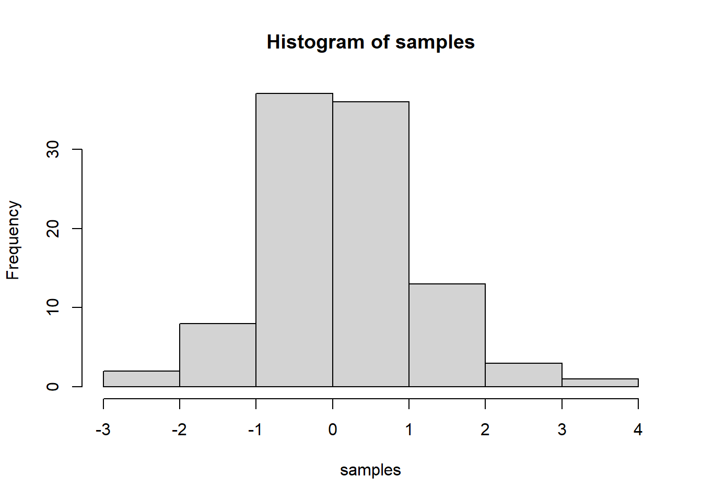

Journal (reproducible report)
Hendrik Doß
2020-11-23
IMPORTANT: You can delete everything in here and start fresh. You might want to start by not deleting anything above this line until you know what that stuff is doing.
This is an .Rmd file. It is plain text with special features. Any time you write just like this, it will be compiled to normal text in the website. If you put a # in front of your text, it will create a top level-header.
Last compiled: 2020-12-03
Notice that whatever you define as a top level header, automatically gets put into the table of contents bar on the left.
1 First Assignement: Bike Sales at different cities in germany
The assignement was to configure a given Dataset to analyze bike sakes in germany. The dataset has been reorganized to be plotable such that the used data sets are the City of interest and the total bike sales in that specific city from 2015 to 2019

Firure: Sales for different Cities
source('01_getting_Started/getting_Started.R', echo = FALSE)1.1 Second level header
You can add more headers by adding more hashtags. These won’t be put into the table of contents
1.1.1 third level header
Here’s an even lower level header
2 Data Wrangling
Last compiled: 2020-12-03
The third task is to learn Data Wrangling. The code for practice is the following
source('00_scripts/Data_wrangling.R', echo = TRUE)##
## > library("tidyverse")
##
## > library("readxl")
##
## > library("lubridate")
##
## > library("writexl")
##
## > library("RSQLite")
##
## > library("DBI")
##
## > library("httr")
##
## > library("glue")
##
## > library("jsonlite")
##
## > library("rvest")
##
## > library("purrr")
##
## > library("xopen")
##
## > library("stringi")
##
## > bikedata <- read_excel("00_Data/01_bike_sales/01_raw_data/bikes.xlsx")
##
## > biketbl_1 <- bikedata %>% select(bike.id, model, model.year)
##
## > biketbl_2 <- bikedata %>% select(1:3)
##
## > biketbl_3 <- bikedata %>% select(1, contains("model"))
##
## > model_and_price <- bikedata %>% select("model", "price")
##
## > bikedata %>% select(contains("category"), everything())
## # A tibble: 231 x 9
## category bike.id model model.year frame.material weight price gender url
## <chr> <dbl> <chr> <dbl> <chr> <dbl> <dbl> <chr> <chr>
## 1 Road - R~ 2875 Aero~ 2020 carbon 7.6 4579 unisex https:~
## 2 Road - R~ 2873 Aero~ 2020 carbon 7.27 6919 unisex https:~
## 3 Road - R~ 2874 Aero~ 2020 carbon 7.1 6429 unisex https:~
## 4 Road - R~ 2876 Aero~ 2020 carbon 7.73 5069 unisex https:~
## 5 Road - R~ 2877 Aero~ 2020 carbon 7.83 3609 unisex https:~
## 6 Road - R~ 2225 Aero~ 2019 carbon 6.8 6139 unisex https:~
## 7 Road - R~ 2091 Aero~ 2019 carbon 6.8 5359 unisex https:~
## 8 Road - R~ 2086 Aero~ 2021 carbon 7.6 2629 unisex https:~
## 9 Road - R~ 2088 Aero~ 2020 carbon 7.3 3699 unisex https:~
## 10 Road - R~ 2120 Aero~ 2020 carbon 7.2 3219 female https:~
## # ... with 221 more rows
##
## > mean_price <- bikedata %>% pull(price) %>% mean()
##
## > char <- bikedata %>% select(where(is.character))
##
## > numerical <- bikedata %>% select(where(is.numeric))
##
## > nonnumerical <- bikedata %>% select(!where(is.numeric))
##
## > bikedata <- bikedata %>% separate(col = category,
## + into = c("category_1", "category_2", "category_3"), sep = " - ")
##
## > bikedata1_7 <- bikedata %>% select(model, contains("category"),
## + price) %>% rename(Model = model, `Bike Familiy` = category_1,
## + `Ride St .... [TRUNCATED]
##
## > bikedata1_8 <- bikedata %>% select(model, contains("category"),
## + price) %>% set_names(c("Model", "Bike Family", "Bike Ridestyle",
## + "Bike ..." ... [TRUNCATED]3 Adding R stuff
So far this is just a blog where you can write in plain text and serve your writing to a webpage. One of the main purposes of this lab journal is to record your progress learning R. The reason I am asking you to use this process is because you can both make a website, and a lab journal, and learn R all in R-studio. This makes everything really convenient and in the same place.
So, let’s say you are learning how to make a histogram in R. For example, maybe you want to sample 100 numbers from a normal distribution with mean = 0, and standard deviation = 1, and then you want to plot a histogram. You can do this right here by using an r code block, like this:
samples <- rnorm(100, mean=0, sd=1)
hist(samples)
When you knit this R Markdown document, you will see that the histogram is printed to the page, along with the R code. This document can be set up to hide the R code in the webpage, just delete the comment (hashtag) from the cold folding option in the yaml header up top. For purposes of letting yourself see the code, and me see the code, best to keep it the way that it is. You’ll learn that all of these things and more can be customized in each R code block.